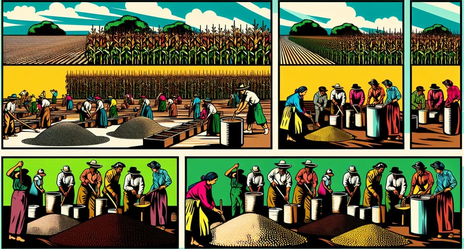

Cómo hacer biofertilizante de estiércol fermentado para la milpa
El biofertilizante de estiércol fermentado es una excelente opción para enriquecer el suelo de tu milpa. Cualquier agricultor o persona interesada en mejorar su cultivo puede hacerlo con materiales accesibles y un poco de paciencia.

🧰 Materiales necesarios
- ☐ 10 kg de estiércol fresco
- ☐ 5 kg de tierra
- ☐ 2 litros de agua
- ☐ 1 kg de azúcar moreno
- ☐ 1 kg de melaza
- ☐ un recipiente grande
- ☐ una pala
- ☐ una malla o tela
- ☐ un lugar oscuro y fresco
📋 Paso a paso
-
1Recolección de materiales
Reúne el estiércol fresco de animales como vacas, cabras o gallinas. Asegúrate de que esté libre de químicos y en buen estado.
-
2Preparar el recipiente
Utiliza un recipiente grande, como un cubo o barril, que tenga capacidad suficiente para los materiales. Limpia bien el recipiente antes de usarlo para evitar contaminaciones.
-
3Mezcla el estiércol y la tierra
En el recipiente, mezcla el estiércol fresco con la tierra en proporciones iguales. Esto ayudará a activar la fermentación y enriquecerá el biofertilizante.
-
4Añadir agua y azúcar
Agrega los 2 litros de agua y el kilogramo de azúcar moreno a la mezcla. Revuelve bien para que todos los ingredientes se integren y la mezcla quede húmeda.
-
5Incorporar la melaza
Añade el kilogramo de melaza a la mezcla y revuelve nuevamente. La melaza proporciona azúcares que ayudan a la fermentación de los microorganismos.
-
6Cubrir la mezcla
Cubre el recipiente con una malla o tela para permitir la circulación del aire y evitar que entren insectos. Deja el recipiente en un lugar oscuro y fresco.
-
7Esperar la fermentación
Deja fermentar la mezcla durante 15 a 20 días. Revuelve la mezcla cada 3-4 días para garantizar una fermentación uniforme.
-
8Comprobar el olor
Al final del periodo de fermentación, verifica que el olor sea similar al de la tierra húmeda. Si el olor es muy fuerte o desagradable, puede que se haya contaminado.
-
9Diluir y aplicar
Antes de usar, diluye el biofertilizante en agua (1 parte de biofertilizante por 10 partes de agua). Aplica esta mezcla en la milpa para nutrir tus cultivos.
💡 Consejos y variaciones
- Usa estiércol de animales sanos para evitar enfermedades en las plantas.
- Haz la mezcla en un lugar ventilado para evitar malos olores.
- Ten cuidado con la proporción de agua; no debe quedar muy líquida ni muy seca.
¿Te fue útil esta guía?
Compártela en tu comunidad y visita más recursos en Guardianes del Pulque.
← Más recursos 💚 Donar